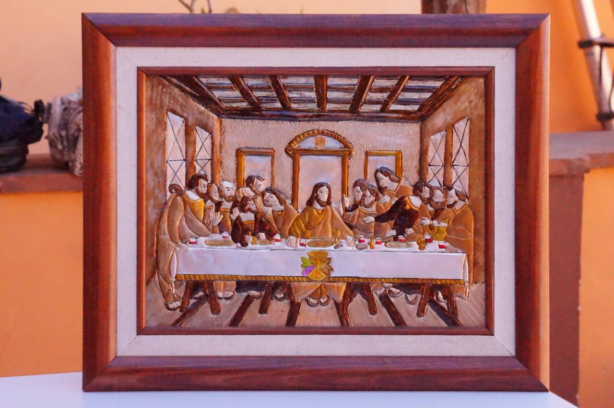
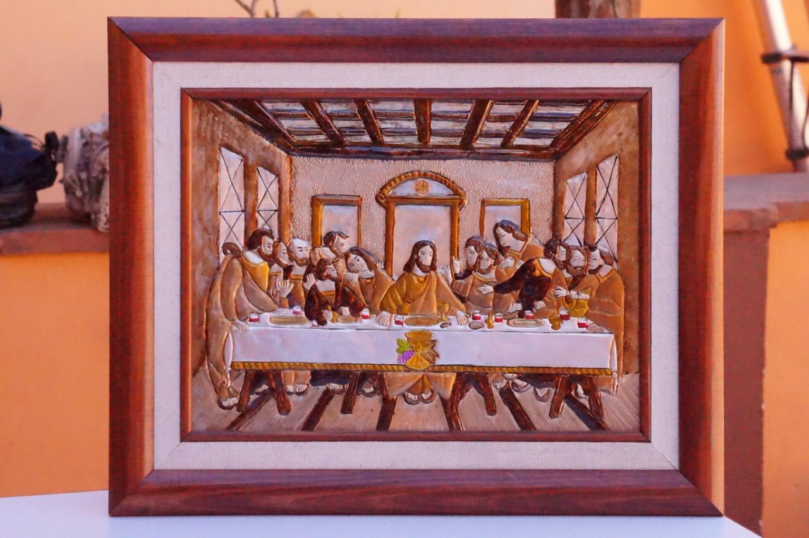
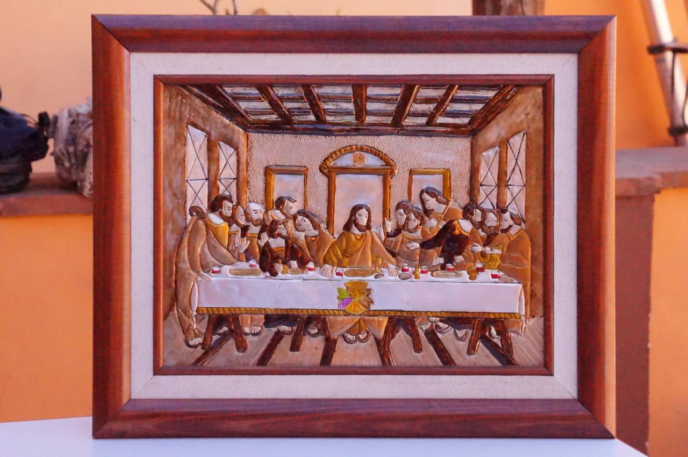

Encuadernado y Empastado
Encuadernado Empastado
Es la union de hojas o bloques que pasan por un proceso de cosido para darle una forma estética y diseío variado, hay dos formas de encuadernacion: japonesa, holandesa y mixteca..

 
